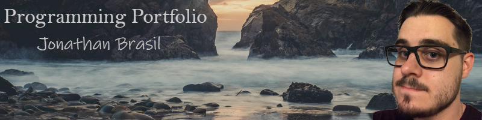
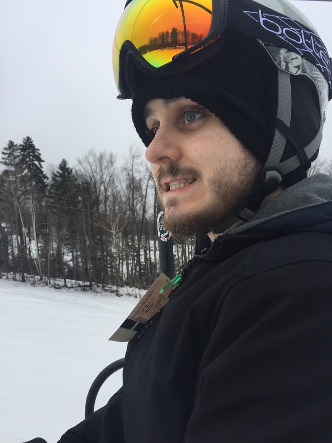

About Me

Hi, my name is Jonathan Brasil and I'm from Warwick, Rhode Island. I'm a senior Account major in the College of Business. I'm 24 years old and this is my second time at URI.I first started at URI as a physics major in 2013, and studied that for a few years. I then decided physics wasn't for me, and took some time off before returning to CCRI to work on a business degree. I fell in love with Accounting and haven't looked back. This is my second year back at URI and I'm hoping to get into the Master's of Accounting program for next year.
 I have a few hobbies, but I spend a lot of time playing computer games or watching sports. I really like watching football and hockey. I'm a homer, so I love our Bruins and Patriots. I do my best to make it to at least one Bruins game a year, but I've yet to go to a Patriots game. I also recently went on a fun trip to Vermont where I skied for the first time. I really enjoyed it, and I plan to try to ski some more this winter season.
I have a few hobbies, but I spend a lot of time playing computer games or watching sports. I really like watching football and hockey. I'm a homer, so I love our Bruins and Patriots. I do my best to make it to at least one Bruins game a year, but I've yet to go to a Patriots game. I also recently went on a fun trip to Vermont where I skied for the first time. I really enjoyed it, and I plan to try to ski some more this winter season.